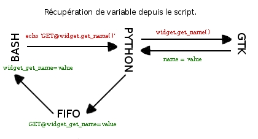
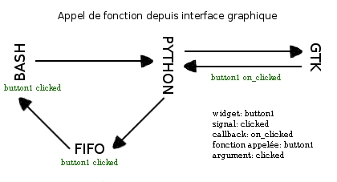

Principe
L'interface sera créée via glade3, un script bash, python ou autre, portant le même nom que le glade, y sera associé.
Dans ce script, on y placera les actions à effectuer en réaction à l'interface (sous forme de fonctions) ou les commandes pour modifier/récupérer la valeur d'un widget.
glade2script, écrit en python, sert de passerelle entre le script et l'interface GTK. Il est connecté au stdout du script (chaque echo), traduit et envoie les commandes à GTK.
Pour envoyer des informations depuis GTK au script, il écrit dans un fichier (FIFO), sur lequel le script est connecté et en récupère les données pour les interpréter sous forme d'appel à des fonctions ou de variables chargées dans l'environnement.
Pour récupérer la valeur d'un widget, 2 solutions, soit via les callbacks (qui appellent nos fonctions avec arguments, à renseigner dans le glade) ou via les commandes glade2script qui agissent sur l'interface depuis notre script.
# Commande glade2script et pygtk
echo 'SET@_label1.set_text(“mon texte”)'
echo 'GET@_entry1.get_text()'
# Commande glade2script
echo "TREE@@LOAD@@treeview1@@/tmp/liste_tree"
echo "IMG@@_img_tux@@tux.png@@150@@150"

Il y a 2 façons d'utiliser glade2script :
Interface Statique:
Dans le script principal, on appelle l'interface graphique et en sortie, on récupère les variables des différents widgets référencés en argument (comme le fait zenity par exemple )
#/bin/bash
SORTIE_GUI=$(glade2script -g ./MonFichier.glade -r '_entry1.get_text')
echo “$SORTIE_GUI”
#Résultat:
_entry1_get_text=”texte saisie dans l'entrée”
EXIT=”ok”
Interface dynamique:
Des traitements seront réalisés en réaction à l'interface, ce code se trouvera dans le script associé au glade, l'interface ne devra pas être fermer pour pouvoir récupérer les données saisies.
Pour lancer la machine, il suffit de créer un petit script où se trouve la commande glade2script.
On peut mixer les deux, utilisation dynamique et récupération des variables en sortie quand même, selon les besoins.
Petit exemple :
Je veux, depuis mon script, lancer une boite de dialogue avec une question et 2 boutons, un pour valider l'autre pour refuser (Utilisation statique).
Il faut d'abord créer la boite de dialogue dans glade.
Dans les signaux des boutons, renseigner pour le signal clicked => on_clicked
Donner un nom explicite aux boutons, ici, btn_ok, btn_no
C'est le nom que les fonctions porteront dans le script associé.
Le script associé au glade et portant le même nom.
#! /bin/bash
PID=$$
FIFO=/tmp/FIFO${PID}
mkfifo $FIFO
function btn_ok()
{
echo 'EXIT@@SAVE'
}
function btn_no()
{
echo 'EXIT@@'
}
# La boucle imbriquée qui suit est le coeur du système de
# communication entre GTK et bash.
# Elle devra toujours se trouver en bas du script associé au
# glade. Vous n'avez pas à vous en soucier, mais il y est possible
# d'intercepter les signaux pour en faire autre chose que
# d'appeler une fonction ou charger une variable...
while read ligne; do
if [[ "$ligne" =~ GET@ ]]; then
eval ${ligne#*@}
echo "DEBUG => in boucle bash :" ${ligne#*@}
else
echo "DEBUG=> in bash NOT GET" $ligne
$ligne
fi
done < <(while true; do
read entree < /tmp/FIFO
[[ "$entree" == "QuitNow" ]] && break
echo $entree
done)
Votre script maintenant :
#! /bin/bash
# Déroulement de votre script
# 2 façons de récupérer le résultat, soit par le code de sortie
# ou en chargeant la variable EXIT dans l'environement et traiter
# le résultat.
if glade2script -g ./mon_gui.glade; then
echo “le bouton ok a été clické”
else
echo “le bouton no a été clické”
fi
#
#
# deuxième méthode, charger la variable EXIT
GUI=$(glade2script -g ./mon_gui.glade)
eval “${GUI}”
If [[ “${EXIT}” == “yes” ]]; then
echo “le bouton ok a été clické”
else
echo “le bouton no a été clické”
fi
# Il est possible de faire différent, à savoir qu'en sortie,
# il y a EXIT=”yes” ou EXIT=”no”, et le code de sortie 0 ou 1
# selon le choix de l'utilisateur.
Quelques précautions :
Général:
- Les * combinés avec les commandes HIZO peuvent poser problèmes, elles seront interprétées dans le shell bash.
Indiquer la commande set -f avant la boucle de fin pour y remedier, set +f pour inverser le comportement.
Glade:
- Les widgets qui doivent être modifiés, ou dont les valeurs seront récupérées via le script associé, devront commencer par _ pour être référencés.
- Les GtkWindow, GtkStatusbar, GtkEventBox, GtkTreeView, GtkComboBox[Entry], GtkImage, GtkButton et GtkAboutDialog n'ont pas besoin d'être référencés.
- Par défaut, dans glade, la visibilité d'une fenêtre est sur non, basculer cette option pour la voir au lancement de votre soft.
Widgets Gtk:
- AboutDialog: Il faut que le nom du logiciel soit le même que le nom de la fenêtre.
Commandes glade2script:
- Les commandes GET@ et SET@ s'utilisent avec des commandes pygtk, c'est pour bien les différencier qu'elles n'ont qu'un seul @
Script associé:
- Il faut utiliser l'encodage html pour représenter le & (& ou &)
- Les sauts de ligne s'écrivent \\n s'ils sont encadrés par des " et \n s'ils sont encadrés par des '
- Tous les echo du script associé passeront par le script python qui gère GTK(glade2script), les @ ou les echo sans arguments feront planter le soft.
- En cas d'utilisation statique, chaque echo sera également évalué dans l'environnement, donc plantage assuré en cas d'eval :)
- En cas d'utilisation de sous-processus et la sortie via les callbacks gtk_widget_destroy, il faudra ajouter un echo après la boucle finale pour éviter le gel de l'application.
- Pour un affichage en console sans passer par le script python, il suffit de rediriger vers un autre fd.
exec 4>$(tty)
echo 'un truc qui ne passera pas par python' >&4
#Penser à refermer le fd en fin de script:
exec 4<&-
A savoir :
Le PID de glade2script est accessible via la commande GET@glade2script_PID
Les variables G2S_SCREEN_HEIGHT, G2S_SCREEN_WIDTH, G2S_TERMINAL_PID sont ajoutées dans l'environnement